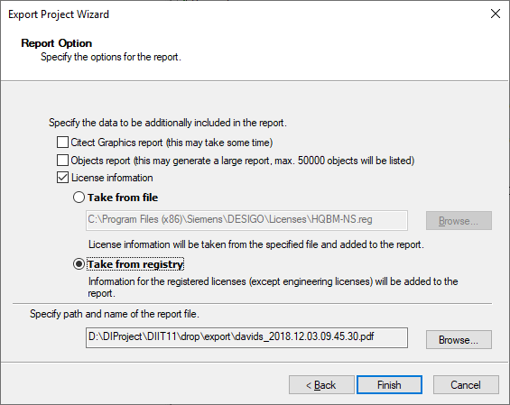

Create a Migration Report
- Start the project utility.
- Select the project.
- Right-click the project and select the displayed menu Migration to Desigo CC.
- The Project Migration Scope displays.
- Select Migration report.
- Click Next >.
- The Project export wizard displays.
- In the Report option dialog field, select one or more options:
- Citect Graphic Report
- Object Report
- License information
- Select Read from file to create the export file at the default location.
a. Click Search.
b. Enter a name and target folder.
c. Click OK.
- Select Read from registry to select information for the registered licenses (except for the configuration license).
- Enter the path and name of the report file:
a. Click Search.
b. Enter a name and target folder.
c. Click OK.
- Enter Finish.
- A system report is generated as a pdf file. A maximum of 50,000 data points can be displayed in the PDF file.

NOTE:
A migration report is not configured the same as the system report in the Report Viewer. You can display all the data in the migration report.